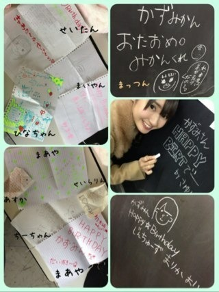
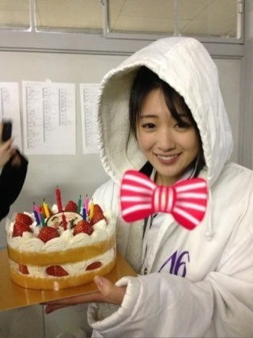
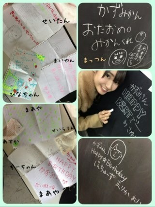
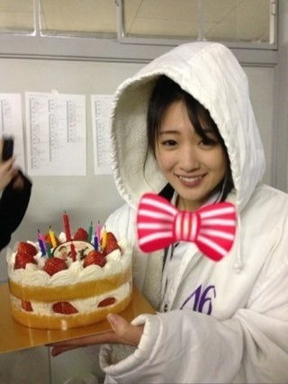

2013/0209Sat（´-`）.｡oO(かずみん×140
みなさん！
沢山のコメントありがとう*\(^o^)/*
すべて読ませていただきました！！
まさにアメイジング＼(^o^)／＼(^o^)／
皆様のおかげで
とーーっても素敵な誕生日に
なりました。
19歳の誕生日はもう二度と来ないけれど、
一生忘れません(T_T)！
メンバーのみんなも
ありがとう( ^ω^ )♡

あと、あみもイラスト書いて
見せてくれました( ´ ▽ ` )
せいらりんと生駒ちゃんが
0時に私の家に突撃してきてくれたの！笑
嬉しかった♪
みーんなおめでとうって
沢山言ってくれて、
高山は幸せでした(*^u^*)
みんなの優しさ、
ハンパないです...(T_T)
乃木坂大好き！！

--------
昨日今日とPV撮影です！
だから衣装がまだ写せないの(>_<)
ごめんなさい。
待ち時間はみんなで
わいわい(((o(*ﾟ▽ﾟ*)o)))
そして明日もお仕事なので
頑張ります！！
皆さん、本当にありがとう(o^^o)
それでは、また♪
沢山のコメントありがとう*\(^o^)/*
すべて読ませていただきました！！
まさにアメイジング＼(^o^)／＼(^o^)／
皆様のおかげで
とーーっても素敵な誕生日に
なりました。
19歳の誕生日はもう二度と来ないけれど、
一生忘れません(T_T)！
メンバーのみんなも
ありがとう( ^ω^ )♡

あと、あみもイラスト書いて
見せてくれました( ´ ▽ ` )
せいらりんと生駒ちゃんが
0時に私の家に突撃してきてくれたの！笑
嬉しかった♪
みーんなおめでとうって
沢山言ってくれて、
高山は幸せでした(*^u^*)
みんなの優しさ、
ハンパないです...(T_T)
乃木坂大好き！！

--------
昨日今日とPV撮影です！
だから衣装がまだ写せないの(>_<)
ごめんなさい。
待ち時間はみんなで
わいわい(((o(*ﾟ▽ﾟ*)o)))
そして明日もお仕事なので
頑張ります！！
皆さん、本当にありがとう(o^^o)
それでは、また♪
2013/02/09 22:00
コメント(533)
おつかれ坂でーす(･ω･/V
素敵な一年になりまように(*^▽^*)
また来まぁしゅ(･ω･ゞ
素敵な一年になりまように(*^▽^*)
また来まぁしゅ(･ω･ゞ
かずみん！きゃわたん！！
アメイジング！！
かずみんきゃわ！お仕事がんば！
お疲れー
誕生日おめでとうo(^▽^)oたくさんの人に祝ってもらってよかったね！！
人中ブラックホール詳しくw
かずみん まりか最強やんか（笑）
体に気をつけてゆっくり休んでください
誕生日おめでとうo(^▽^)oたくさんの人に祝ってもらってよかったね！！
人中ブラックホール詳しくw
かずみん まりか最強やんか（笑）
体に気をつけてゆっくり休んでください
いい誕生日になったみたい。
良かった(^-~)／
5th楽しみにしてるね～
良かった(^-~)／
5th楽しみにしてるね～
20番目でした
ほんとーに
おめでとっ♪♪
いい
誕生日なって
よかったです♪♪
これからも
体調気をつけて
頑張って下さい♪♪
自分も
頑張っていきます（≧∇≦）
アメイジング＼(^o^)／
メンバーみんな優しいね 早くPVみたい
早くPVみたい
明日のお仕事頑張ってね
明日のお仕事頑張ってね
こんばんは。
みんなから祝福されて良かったねかずみん。
これもかずみんの人柄の賜物だよ。
かずみんみんなに愛されてるもんね。
いい笑顔してるよ。
かずみんが嬉しいとみんな嬉しい。
明日もお仕事がんばってね。
みんなから祝福されて良かったねかずみん。
これもかずみんの人柄の賜物だよ。
かずみんみんなに愛されてるもんね。
いい笑顔してるよ。
かずみんが嬉しいとみんな嬉しい。
明日もお仕事がんばってね。
かずみん、こんばんわー
みんなに祝福されてかずみんは世界一の幸せ者や！！
最後の写真がちょっとおもしろいのは何故？ｗ
来週は直接おめでとうを言うぜぜぜぜ！！！
みんなに祝福されてかずみんは世界一の幸せ者や！！
最後の写真がちょっとおもしろいのは何故？ｗ
来週は直接おめでとうを言うぜぜぜぜ！！！
かずみんはみんなに好かれてるね(≧∀≦)
PV楽しみ(≧▽≦)
明日も仕事頑張ってね(^_^)/
PV楽しみ(≧▽≦)
明日も仕事頑張ってね(^_^)/
お疲れ様です。
本当にお誕生日おめでとうございます。そして高山さんのお陰で勇気がわいてきました。
本当にお誕生日おめでとうございます。そして高山さんのお陰で勇気がわいてきました。
かずみんヤッホー(o・・o)/
お祝いしてもらったんやね
かずみかん
みかんくれ(笑)
吹き出しの文章読めんorz
撮影忙しそうやな
ガジがんばー
デジモンクリアしたわw
ほなねﾉｼ
お祝いしてもらったんやね
かずみかん
みかんくれ(笑)
吹き出しの文章読めんorz
撮影忙しそうやな
ガジがんばー
デジモンクリアしたわw
ほなねﾉｼ
こんばんは(^o^)/毎日お仕事お疲れ様！
みんな誕生日祝ってくれたんだね♪幸せ者だね＼(^o^)／
あれ？さすがにカキフライケーキじゃないんだね(笑)
明日もお仕事なんだ！寒いから体調気を付けてね！
あと、16日の個別が待ちきれない(笑)
おやすみー(-.-)Zzz・・・・
みんな誕生日祝ってくれたんだね♪幸せ者だね＼(^o^)／
あれ？さすがにカキフライケーキじゃないんだね(笑)
明日もお仕事なんだ！寒いから体調気を付けてね！
あと、16日の個別が待ちきれない(笑)
おやすみー(-.-)Zzz・・・・
かずみん(*゜Q゜*)
きえっぴい だよ！
コメント呼んでくれたかな？
かずみん可愛い^^
大好きです！
_
改めておたおめー！♡（≧∇≦）
お仕事おつかれーぃ♪( ´▽｀)
明日もお仕事頑張ってね(*^◯^*)
自分ポニーテールの時のかずみんが1番大好きでっす♡
まぁどんなかずみんも大好きなんだけどね！
早く新衣装みたぁい！
お仕事おつかれーぃ♪( ´▽｀)
明日もお仕事頑張ってね(*^◯^*)
自分ポニーテールの時のかずみんが1番大好きでっす♡
まぁどんなかずみんも大好きなんだけどね！
早く新衣装みたぁい！
かずみん毎日お疲れ様(^^)
ケンジでっすε=ε=┏( ・_・)┛==卍
メンバーの皆、支えてくれるスタッフやファンの人達にお祝いしてもらえて本当に良かったね♪
これからも体調に気をつけて、元気に頑張って＆夢叶うといいね(^^)v
…実はちょっとカキフライケーキの写真を期待してた（笑）
それじゃあ明日からもお互いに頑張ろう(^^)v
またね(^^)
ケンジ♪
ケンジでっすε=ε=┏( ・_・)┛==卍
メンバーの皆、支えてくれるスタッフやファンの人達にお祝いしてもらえて本当に良かったね♪
これからも体調に気をつけて、元気に頑張って＆夢叶うといいね(^^)v
…実はちょっとカキフライケーキの写真を期待してた（笑）
それじゃあ明日からもお互いに頑張ろう(^^)v
またね(^^)
ケンジ♪
乃木メンは、イイヤツばかりだ～～！
感動・゜・(つД｀)・゜・
感動・゜・(つД｀)・゜・
コメント数凄かったよね！(笑)
これからもずっと応援してるね！
頑張れポジティブかずみん！！
(^^)d
これからもずっと応援してるね！
頑張れポジティブかずみん！！
(^^)d
かーずーみーんー‼
PV楽しみだぜぜぜぜぜ。
bay
PV楽しみだぜぜぜぜぜ。
bay
ゆうし。だよーぃ！
一実
5th関東とりあえず全部行くから
仕事休む(笑)
０時に突撃って(笑)
仲良くていいなぁ(*^^*)
いい友達もったね！
人生で一番は友達！
また、コメント忘れてしまいました。
メンバーから誕生日祝いをしてくれて幸せですね。
メンバーから誕生日祝いをしてくれて幸せですね。
みんなから好かれてるんだね。
まさにアメイジング。
素晴らしい。
まさにアメイジング。
素晴らしい。
前回はすごいコメントの数でしたねー
突撃訪問は嬉しい！わかりますー
これからも幅広くお仕事がんばって！
ハヤヒ
かずみさんが、みんなから愛されてる証拠だね！！
お疲れ様です！
いい誕生日になってよかったですね♪
京都の握手会行くんで楽しみです♪
アメイジング＼(^o^)／
いい誕生日になってよかったですね♪
京都の握手会行くんで楽しみです♪
アメイジング＼(^o^)／
遅れましたが、お誕生日おめでとう。
みんなに愛されているかずみん、幸せですね。
その笑顔で、今年も頑張れ！
＼(^o^)／
みんなに愛されているかずみん、幸せですね。
その笑顔で、今年も頑張れ！
＼(^o^)／
素敵な一年に！
あっ2月の生誕祭は放送が2月24日になるっぽいね
国公立の前期試験が25日というねw
あっ2月の生誕祭は放送が2月24日になるっぽいね
国公立の前期試験が25日というねw
かずみん可愛い。
かずみん今日デジモンクリアしました。
やっぱり最後のパルモンとミミちゃん感動しますね
かずみん今日デジモンクリアしました。
やっぱり最後のパルモンとミミちゃん感動しますね
こんばんわ(°∀°)
いつも
かずみんから
元気もらってるから
それ以上にかずみんのこと
応援してやる (｀･ω･´)
お仕事がんばってなー(°∀°)
応援してるぜ!!＼(^o^)／ｱﾒｲｼﾞﾝｸﾞ
いつも
かずみんから
元気もらってるから
それ以上にかずみんのこと
応援してやる (｀･ω･´)
お仕事がんばってなー(°∀°)
応援してるぜ!!＼(^o^)／ｱﾒｲｼﾞﾝｸﾞ
昨日のコメントの数すごいね！
かずみんめっちゃ愛されてるね～♪
さっすが～♪♪
俺もめっちゃ好きだよー!!
今年も頑張ろうぜ～！(笑)
じゃっ体調に気をつけて頑張ってね(^^)/
おやすみー
かずみんめっちゃ愛されてるね～♪
さっすが～♪♪
俺もめっちゃ好きだよー!!
今年も頑張ろうぜ～！(笑)
じゃっ体調に気をつけて頑張ってね(^^)/
おやすみー
写真の笑顔ほっこりしてていいね！
乃木坂の仲のよさが伝わってくる(^^)
10代ラストの１年楽しんでね！
かずみん、こんばんわ～！
(*^-^)ノ
メンバーからファンからたくさんの"愛"のこもった手紙やコメント良かったなぁ！いかにかずみんがみんなから好かれてるかがわかるな！
改めておめでとうな！
PV撮影お疲れちゃんね！解禁を楽しみにしてんよ～！
明日の仕事も楽しんでな！
19才の一年もアメイジングな年になります様に！
(^人^)
じゃ、今日も１日お疲れちゃんね！
またね！
( ´∀`)/~~~
ポジティブsay！
(*^-^)ノ
メンバーからファンからたくさんの"愛"のこもった手紙やコメント良かったなぁ！いかにかずみんがみんなから好かれてるかがわかるな！
改めておめでとうな！
PV撮影お疲れちゃんね！解禁を楽しみにしてんよ～！
明日の仕事も楽しんでな！
19才の一年もアメイジングな年になります様に！
(^人^)
じゃ、今日も１日お疲れちゃんね！
またね！
( ´∀`)/~~~
ポジティブsay！
サプライズ嬉しいね！
やっぱかずみんは
皆のアイドルだ＼(^o^)／
写真のかずみんめっちゃ可愛いよ！
明日と仕事かぁ
大変だろうけど
頑張ってね！
またかずみんを観れるのを楽しみに
仕事頑張ってきます！＼(^o^)／
＼(^o^)／ひろふみ＼(^o^)／
やっぱかずみんは
皆のアイドルだ＼(^o^)／
写真のかずみんめっちゃ可愛いよ！
明日と仕事かぁ
大変だろうけど
頑張ってね！
またかずみんを観れるのを楽しみに
仕事頑張ってきます！＼(^o^)／
＼(^o^)／ひろふみ＼(^o^)／
誕生日おめでとう！
かずみんっ
いつまでも
変わらずに
その気さくな性格でいてね！
てか
祝ってくれる
メンバーがいるって
本当素晴らしいよね♪
羨ましい！！
この1年が
"かずみん"にとって
良い1年になりますように♪
ではでは。
明日も1日頑張りまいやん！！
かずみんっ
いつまでも
変わらずに
その気さくな性格でいてね！
てか
祝ってくれる
メンバーがいるって
本当素晴らしいよね♪
羨ましい！！
この1年が
"かずみん"にとって
良い1年になりますように♪
ではでは。
明日も1日頑張りまいやん！！
かずみんこんばんは(^-^*)/
撮影お疲れ様です！！
みんなに
愛されている証拠だねo(^-^)o
改めて
お誕生日おめでとう(o^-')b
なんかそんなにたくさんの人に祝ってもらえるなんて素晴らしいね!!
羨ましい…笑
乃木坂羨ましい！(*^.^*)
明日もお仕事ファイト(☆∀☆)
羨ましい…笑
乃木坂羨ましい！(*^.^*)
明日もお仕事ファイト(☆∀☆)
かずみん こんばんは *\(^o^)/*
メンバーみんなからも誕生日祝ってもらったんやね ♪
まっつんww
りんご やなくて みかん を欲しがってるやん 笑
じんちゅーず も仲良しさんやね (*^^*)
まあや が2つあるのは (._.？) ン？
誕生日に突撃されるの嬉しいよね （≧∇≦）
情報解禁楽しみにしてるね ...φ(･ω･*)☆
待ち時間の間に
人中ブラックホール とか言う技が生まれたらしいね 笑
休憩時間の乃木メンの遊びってどれも楽しそう (#^.^#)
19歳！
アメイジングで素敵な1年にしてね ＼(^o^)／
これからも
頑張っていこーねっ
(*´∀｀*)
できるかぎり
応援するからヾ(=^▽^=)ノ
頑張っていこーねっ
(*´∀｀*)
できるかぎり
応援するからヾ(=^▽^=)ノ
メンバーからもファンからも愛されてる一実ちゃんは、アメイジング。
地元でも愛されている一実ちゃんは、ほんとアメイジング。
地元でも愛されている一実ちゃんは、ほんとアメイジング。
みんなのイラストかわいー
生駒ちゃんとか来てくれたんだね！
さすが秋田優しい笑
かずみん早く衣装みたい笑
楽しみに待ってるわ！
そろそろ握手会だね
ほんと楽しみ！
かずみんがんばって＼(^o^)／
今日もおちかれぃ(^o^)／
グランツです。
.
改めて、お誕生日おめでとう♪
みんなにお祝いしてもらえてよかったね(≧∇≦)
.
オレも0時に突撃したかった?(>_<)笑
.
PV撮影おっつん!(b^ー°)
あっ、おっつんはお疲れさまの意味ね！笑
楽しみに待ってるよ♪
.
じゃあ、今回はここまで。
次のblogまで(^O^)ノシ
.
グランツです。
.
改めて、お誕生日おめでとう♪
みんなにお祝いしてもらえてよかったね(≧∇≦)
.
オレも0時に突撃したかった?(>_<)笑
.
PV撮影おっつん!(b^ー°)
あっ、おっつんはお疲れさまの意味ね！笑
楽しみに待ってるよ♪
.
じゃあ、今回はここまで。
次のblogまで(^O^)ノシ
.
かずみさん、こんばんは☆
みんなにお祝いされて良かったですね
それだけ、かずみさんは乃木メンにも、そしてファンにも愛されてる証拠です
これからも、かずみさんらしさを忘れずに一緒に坂を上りましょう
5thのＰＶや特典映像も楽しみにしてますよー
みんなにお祝いされて良かったですね
それだけ、かずみさんは乃木メンにも、そしてファンにも愛されてる証拠です
これからも、かずみさんらしさを忘れずに一緒に坂を上りましょう
5thのＰＶや特典映像も楽しみにしてますよー
かずみん、こんばんわ
 最高に幸せなお誕生日、よかったね。これからも頑張らなきゃね。ケーキも可愛いけど、その赤と白のボーダーの蝶ネクタイ可愛いなあ。明日もガジ頑張ってね。
最高に幸せなお誕生日、よかったね。これからも頑張らなきゃね。ケーキも可愛いけど、その赤と白のボーダーの蝶ネクタイ可愛いなあ。明日もガジ頑張ってね。


師匠誕生日みんなに祝ってもらってよかったね
めっちゃうらやましい
俺の誕生日も祝ってな
来週たくさん話そうな
アメイジング
＼(^o^)／
めっちゃうらやましい
俺の誕生日も祝ってな
来週たくさん話そうな
アメイジング
＼(^o^)／
改めておめでとう＼(^o^)／
読んでくれてありがとう^ ^ １０代最後の一年間がいい年になるよう祈っています。
みんなに愛されて、私も嬉しいです＼(^o^)／
読んでくれてありがとう^ ^ １０代最後の一年間がいい年になるよう祈っています。
みんなに愛されて、私も嬉しいです＼(^o^)／
がんばって(^_^)v
よかったねーヾ(´∀｀○)ノ
ホントに愛されてるね(*´∇｀*)
PV撮影お疲れ様～
完成を楽しみにしてるね!
それでは～
ホントに愛されてるね(*´∇｀*)
PV撮影お疲れ様～
完成を楽しみにしてるね!
それでは～
かずみん改めて誕生日オメイジング*\(^o^)/*
乃木坂ホント楽しそうヽ(；▽；)ノ
撮影お疲れだね！
明日も頑張ってー*\(^o^)/*
幕張当たったから行くから頑張ってね(^-^)
19歳も最高の年にしてね(´･Д･)」
乃木坂ホント楽しそうヽ(；▽；)ノ
撮影お疲れだね！
明日も頑張ってー*\(^o^)/*
幕張当たったから行くから頑張ってね(^-^)
19歳も最高の年にしてね(´･Д･)」


かずみんは沢山の人から愛されてるね(*^_^*)
来週会えるのを楽しみにしてます!!
へばっまずな(^-^)/~~